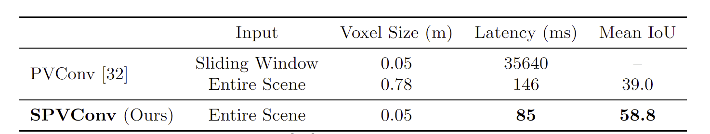

Searching Efficient 3D Architectures with Sparse Point-Voxel Convolution

Haotian Tang, Zhijian Liu, Shengyu Zhao, Yujun Lin, Ji Lin, Hanrui Wang, & Song Han (2020). Searching Efficient 3D Architectures with Sparse Point-Voxel Convolution European Conference on Computer Vision.
摘要
自动驾驶汽车需要高效、准确地理解3D场景，才能安全驾驶。在硬件资源有限的情况下，现有的3D感知模型不能很好地识别小实例(如行人、骑自行车的人)，这是由于低分辨率的体素化和激进的下采样。为此，我们提出了稀疏点-体卷积(SPVConv)，这是一个轻量级的3D模块，它为VanillaSparse卷积提供了高分辨率的基于点的分支。这种基于点的分支即使在大型户外场景中也能够保留细节，而开销可以忽略不计。为了探索高效的三维模型的频谱，我们首先定义了一个基于SPVConv的灵活的体系结构设计空间，然后提出了3D神经体系结构搜索(3D-NAS)，以在这个不同的设计空间上高效地搜索最优的网络结构。实验结果验证了SPVNAS模型的快速性和准确性：它比目前最先进的Minkowski Net高出3.3个百分点，在竞争激烈的SemanticKITTI排行榜上排名第一。在Minkowski Net上实现了8倍的计算量减少和3倍的实测加速比，仍然具有较高的精度。最后，将我们的方法移植到三维目标检测中，与基于KITTI的一阶段检测基线相比，取得了一致的改进。
引言
3D深度学习由于其广泛的应用而受到越来越多的关注：例如，它已经被用于LiDAR感知中，作为自动驾驶系统的眼睛来理解户外场景的语义。由于乘客的安全是自动驾驶汽车的重中之重，因此要求3D感知模型同时达到高精度和低延迟。然而，自动驾驶汽车上的硬件资源受到外形因素(因为我们不想要整个工作站)和散热的严格限制。因此，在有限的计算资源(如内存)下设计高效的三维神经网络模型是至关重要的。
图1。小的实例(例如行人和骑自行车的人)在低分辨率下很难识别(由于粗体素化或激进的下采样)。
研究人员主要利用了两种3D数据表示方式：点云和光栅化体素网格。正如刘等人所分析的那样。[32]，基于点的方法[40，43，28]将高达90%的运行时间浪费在构造不规则数据上，而不是在实际的特征提取上。另一方面，基于体素的方法通常存在严重的信息丢失问题：即密集体素[36，32]的分辨率受到记忆的严格限制；稀疏体素[14，9]需要激进的下采样来获得更大的感受野，从而导致更深层次的分辨率较低。在分辨率较低的情况下(参见图1)，可能会将多个点甚至多个小对象合并到一个网格中，变得无法区分。在这种情况下，小实例(例如，行人和骑自行车的人)与大对象(例如，汽车)相比处于劣势。因此，当硬件资源有限且分辨率较低时，以前的3D模块的效果会打折扣。
针对这些问题，我们提出了一种新颖的三维模块—稀疏点体卷积(Sparse Point-Voxel Convsion，SPVConv)，该模块在原始稀疏卷积的基础上引入了低成本的高分辨率点分支，有助于捕捉细节。在SPVConv的基础上，我们进一步提出了3D神经结构搜索(3D-NAS)来搜索高效的3D模型。我们在搜索空间中加入细粒度的信道号以增加多样性，并引入渐进式深度收缩来加速训练。实验结果验证了该模型的快速性和准确性：在较低的时延下，该模型在mIoU中的性能比Minkowski Net高3.3%。在保证较高精度的同时，在Minkowski Net上实现了8倍的运算量减少和3倍的实测加速比。我们进一步将我们的方法移植到KITTI来进行3D目标检测，并且在之前的一阶段检测基线上取得了一致的改进。
本文的贡献有三个方面：
- 我们设计了一个轻量级的3D模块SPVConv，提高了过去在有限硬件资源下对小对象的性能要求。
- 我们介绍了第一个用于3D场景理解的AutoML框架3D-NAS，它在特定的资源约束下提供最佳的3D模型。
- 我们的方法在竞争激烈的SemanticKITTI*排行榜上以很大的差距和排名第一的优势超过了所有以前的方法。在出版之后。它还可以转移到目标检测上，并获得一致的改进。
2 相关工作
2.1 3D Perception Models（3D感知模型）
三维深度学习作为自动驾驶中LiDAR感知的重要手段，受到越来越多的关注。早期的研究[7，36，42，64，77]依赖于体积表示和原始三维卷积来处理三维数据。由于三维表示的稀疏性，密集的体表示本身效率不高，不可避免地会带来信息丢失。因此，研究人员提出使用对称函数直接学习三维点云表示法[40]。为了提高邻域建模能力，研究人员在几何[28，35，43，52，55，56，67，69]或语义[63]邻域上定义了基于点的卷积。还有为特定任务量身定做的3D模型，例如基于这些模块构建的检测[38，39，41，47-49，70，73]和实例分割[16，21，23，71]。
最近，一些研究者开始关注3D深度学习的效率方面。Riegler等人[45]的研究成果。Wang et al.[60，61]和Lei等人。[25]建议使用密度较低的区域占用较少体素网格的八叉树来减少体积表示的内存占用。刘等人。[32]分析了基于点的方法和基于体素的方法的瓶颈，提出了点-体素卷积方法。Graham et al.[14]和Choy等人。[9]提出了Sparse卷积算法，通过保持激活的稀疏性和跳过非活动区域的计算来加速体积卷积。
2.2 Neural Architecture Search(神经体系结构搜索)
为了减轻人工设计神经网络的负担[18，46，33，75，20]，研究人员引入了神经体系结构搜索(NAS)，以使用强化学习[79，80]和进化搜索[29]自动高精度地构建神经网络。新一波研究开始利用神经结构搜索[53，66，54]为移动部署设计高效模型。然而，传统的框架需要很高的计算成本和相当大的碳足迹[51]。针对撞击，研究人员提出了不同的技术来降低搜索成本，包括可微结构搜索[30]、路径级二值化[6]、单路径单次采样[15，8，4]和权重分担[50，4，57]。此外，神经结构搜索也被用于压缩和加速神经网络，包括修剪[17，31，5，27]和量化[58，15，59，62]。这些方法中的大多数都是为2D视觉识别量身定做的，因为2D视觉识别有许多定义明确的搜索空间[44]。最近，研究人员将神经结构搜索应用于3D医学图像分割[78，22，72，2，65，74]和3D形状分类[34，26]。然而，它们不能直接应用于3D场景理解，因为3D医学数据仍然是类似于2D图像的格式(这与3D场景完全不同)，并且3D对象的尺度比3D场景小得多(这使得它们对分辨率的敏感度较低)。
3. SPVConv：设计有效的3D模块
我们首先回顾最近的两个3D模块：点-体素卷积[32]和Sparse卷积[9]，并分析它们的瓶颈。我们观察到，当内存受限时，它们都遭受了信息丢失(由粗体素化或激进的下采样引起)。为此，我们引入了稀疏点-体素卷积(SPVConv)，以有效地处理大型3D场景(如图2所示)。
图2.稀疏点-体素卷积(SPVConv)概述：它为基于稀疏体素的分支配备了一个轻量级、高分辨率的基于点的分支，可以在大场景中捕捉到精细的细节。
3.1 Point-Voxel Convolution: Coarse Voxelization（点-体素卷积：粗体素化法）
刘等人。[32]提出了点-体素卷积来表示三维输入数据，减少了内存消耗，同时在体素上进行卷积，减少了不规则的数据访问，提高了局部性。具体地说，其基于点的分支单独变换每个点，其基于体素的分支在来自基于点的分支的体素化输入上卷积。
PVCNN(建立在点-体素卷积的基础上)在单个GPU(内存为12 GB)上最多可以支持1283个体素分支的体素，对于一个较大的室外场景(大小为100m×100m×10m)，每个体素网格将对应一个相当大的区域(大小为0.8m×0.8m×0.1m)。在这种情况下，小实例(例如，行人)将仅占用几个体素网格(参见图1)。从这几个点上，PVCNN很难从基于体素的分支中学习到任何有用的信息，导致性能相对较低(参见表1)。或者，我们可以逐段处理大型3D场景，使每个滑动窗口的比例更小。为了保存细粒度信息(即体素大小小于0.05m)，我们必须为244个滑动窗口中的每个窗口运行一次PVCNN。这需要35秒来处理单个场景，这对于大多数实时应用(例如，自动驾驶)来说是不可接受的。

表1.点-体素卷积[32]不适用于大型3D场景。如果使用滑动窗口进行处理，对于实时应用程序来说，大的延迟是负担不起的。如果拍摄整个场景，分辨率太低，不能捕捉到有用的信息。
3.2 Sparse Convolution: Aggressive Downsampling（稀疏卷积：主动下采样）
体积卷积一直被认为效率低下，无法放大。最近，研究人员提出了稀疏卷积[14，9]，跳过非激活区域以显著减少内存消耗。更具体地说，它首先找到输入点和输出点之间的所有活动突触(表示为核映射)，然后基于该核映射执行卷积。为了保持激活稀疏，它只考虑也属于输入的这些输出点。我们请读者参考Choy等人[9]以了解更多细节。
因此，稀疏卷积可以提供比原始体积卷积高得多的分辨率。然而，由于有限的计算资源，网络不可能很深入。因此，网络必须非常积极地进行下采样，以获得足够大的接受范围，这是非常有损耗的。例如，最先进的MinkowskiNet[9]逐渐对输入点云应用四个下采样层，之后，体素大小将变为$0.05×2^4=0.8$m。与Point-Voxel卷积类似，此分辨率太粗，无法捕获小实例(参见图4)。
Vanilla
Vanilla是神经网络领域的常见词汇，比如Vanilla Neural Networks、Vanilla CNN等。Vanilla本意是香草，在这里基本等同于raw。比如Vanilla Neural Networks实际上就是BP神经网络，而Vanilla CNN实际上就是最原始的CNN。
图4. MinkowskiNet在识别小对象和区域边界方面有较高的错误，而SPVNAS由于基于高分辨率的点分支而更好地识别小对象。
3.3 Solution: Sparse Point-Voxel Convolution（解决方案：稀疏点-体素卷积）
为了克服这两个模块的局限性，我们在图2中提出了稀疏点-体素卷积(SPVConv)：基于点的分支始终保持高分辨率表示，而基于稀疏体素的分支则采用分离卷积来跨不同的接收场大小建模。两个分支通过稀疏体素化和去体素化以微不足道的代价进行通信。
数据表示。我们的稀疏点-体素卷积运算在：
- 稀疏体素化张量$S=(\{(p^s_m，f^s_m)\}，v)$，其中$p^s_m=(x^s_m，y^s_m，z^s_m)$是3D坐标，$f^s_m$是第m个非零网格的特征向量，$v$是当前层中一个网格的体素大小(即边长)；
- 点云张量$T={(p^t_k,f^t_k)}$，其中$p_k=(x_k,y_k,z_k)$是三维坐标，$f_k$是第$k$个点的特征向量。
稀疏体素化。在基于上稀疏体素的分支中，我们首先将高分辨率点云张量$T$变换为稀疏张量$S$：
其中，$\mathbb I[·]$是$\hat P^t_k$是否属于体素网格$p^s_m$的二进制指示符，$N_m$是归一化因子(即，落入第$m$个非零体素网格的点数)。然而，这样的公式需要$\mathcal O(Mn)$复杂度，其中$m=|S|$和$n=|T|$。由于$m$，$n$的典型值约为105，这种简单的实现对于实时应用是不切实际的。
为此，我们提出使用GPU哈希表来加速稀疏体素化和去体素化。具体地说，我们首先为稀疏体素化张量$S$中的所有激活点构造一个哈希表，该哈希表可以在$\mathcal O(n)$时间内完成。之后，我们迭代$T$中的所有点，对于每个点，我们使用其体素化坐标作为键来查询稀疏体素化张量中的相应索引。由于哈希表上的查找需要$\mathcal O(1)$时间[37]，因此该查询步骤总共将花费$O(m)$时间。因此，坐标索引的总时间将从$O(mn)$减少到$O(m+n)$。
Feature Aggregation.(特征聚合)
然后，我们使用残差稀疏卷积块序列对稀疏体素化张量进行邻域特征聚合[9]。我们使用与稀疏体素化相同的哈希表实现在GPU上并行稀疏卷积中的内核映射操作，这比Choy等人的实现提供了1.3倍的加速比。[9]。请注意，我们的方法和基线都已升级到此加速实现。
Sparse Devoxelization.
对于聚集的特征(以稀疏张量的形式)，我们将它们转换回基于点的表示，以便将来自两个分支的信息融合在一起。类似于刘等人。[32]中，我们选择用8个相邻体网格对每个点的特征进行三线性插值，而不是使用naive最近插值法(最近邻插值)。
Point Transformation and Feature Fusion. （点变换和特征融合。）
在较低的基于点的分支中，我们直接在每个点上应用MLP来提取单独的点特征。然后，我们将两个分支的输出与加法进行融合，以组合所提供的补充信息。与普通稀疏卷积相比，MLP层只需要很少的计算开销(按MAC数量计算为4%)，但会将重要的细节引入信息流(参见图5)。
MAC: 乘积累加运算 是在数字信号处理器或一些微处理器中的特殊运算。实现此运算操作的硬件电路单元，被称为“乘数累加器”。这种运算的操作，是将乘法的乘积结果和累加器 A 的值相加，再存入累加器：
若没有使用 MAC 指令，上述的程序可能需要二个指令，但 MAC 指令可以使用一个指令完成。而许多运算（例如卷积运算、点积运算、矩阵运算、数字滤波器运算、乃至多项式的求值运算）都可以分解为数个 MAC 指令，因此可以提高上述运算的效率。
MAC指令的输入及输出的数据类型可以是整数、定点数或是浮点数。若处理浮点数时，会有两次的数值修约（Rounding），这在很多典型的DSP上很常见。若一条MAC指令在处理浮点数时只有一次的数值修约，则这种指令称为“融合乘加运算”/“积和熔加运算”（fused multiply-add, FMA）或“熔合乘法累积运算”（fused multiply–accumulate, FMAC）。
4 3D-NAS: Searching Efficient 3D Architectures（搜索高效的3D架构）
即使有了我们的模块，设计一个高效的神经网络仍然是一个挑战，我们需要仔细调整网络结构(例如，所有层的通道数和核大小)来满足实际应用的约束(例如，延迟、能量和准确性)。为此，我们引入了3D神经体系结构搜索(3D-NAS)，以自动设计高效的3D模型(如图3所示)。
图3. 三维神经体系结构搜索(3D-NAS)概述：我们首先训练一个由多个SPVConv组成的超级网络，支持细粒度的通道数和弹性网络深度。然后，在给定的计算约束条件下，进行进化体系结构搜索，得到最优的候选模型。
4.1 Design Space（设计空间）
设计空间的质量对神经结构搜索的性能有很大影响。在我们的搜索空间中，我们结合了细粒度的信道号和弹性的网络深度；但是，我们不支持不同的核大小。
Fine-grained Channel Numbers.（细粒度通道数 ）计算开销随着信道数的增加呈二次曲线增加，因此信道数的选择对网络效率有很大的影响。大多数现有的神经结构框架[6]只支持粗粒度的信道号选择：例如，在几个(2-3)选择中搜索ResNet/MobileNet块的扩展比。在这种情况下，只有块的中间通道号可以切换，而输入和输出通道号保持不变，经验上，我们观察到这限制了搜索空间的变化。为此，我们通过允许从一个大的选择集合(大小为$O(n)$)中选择所有频道号来扩大搜索空间。这种细粒度的信道号码选择极大地增加了每个挡路的候选数目：例如，对于具有两个连续卷积的挡路，从常量(2-3)增加到$O(n^2)$。
Elastic Network Depths.(弹性网络深度) 我们在设计空间中支持不同的网络深度。对于3DCNN，单独减少信道数目并不能获得显著的测量加速比，这与2DCNN截然不同。例如，通过将Minkowski Net[9]中的所有信道数缩减4倍和8倍，MAC的数量将分别减少到7.5G和1.9G。然而，尽管MAC的数量大大减少，但它们在GPU上的测量延迟非常相似：105ms和96ms(在单个GTX1080TiGPU上测量)。这表明，尽管MAC的数量非常少，但仅靠缩减频道数量并不能为我们提供非常有效的模式。这可能是因为3D模块通常比2D模块更受内存限制；MAC的数量随频道数呈二次曲线减少，而内存则呈线性减少。受此启发，我们选择将弹性网络深度融入到我们的设计空间中，以便这些计算量非常小(和内存成本很大)的层可以被移除并合并到相邻的层中。
Small Kernel Matters.（小内核很重要。）核大小通常包含在二维CNN的搜索空间中。这是因为在GPU上，具有较大核尺寸的单卷积比具有较小核尺寸的多卷积具有更高的效率，但对于3D CNN则不是这样。从计算角度看，核大小为5的单个2D卷积比核大小为3的两个2D卷积只需要1.4倍的MAC；而核大小为5的单个3D卷积需要的MAC比核大小为3的两个3D卷积(如果应用于密集体素网格)多2.3倍。这种较大的计算代价使得它不适合在3DCNN中使用大的核尺寸。此外，3D模块的计算开销还与内核大小有关。例如，SparseConvsion[14，9]建立核映射需要$O(k^3n)$个时间，其中$k$是核大小，$n$是点数，这表明它的代价相对于核大小呈立方增长。基于这些原因，我们决定将所有卷积的核大小保持为3，并且不允许在我们的搜索空间中改变核大小。即使在较小的核大小的情况下，通过改变网络深度仍然可以获得较大的接收场，可以达到与改变核大小相同的效果。
4.2 Training Paradigm 训练范式
搜索细粒度的设计空间是非常具有挑战性的，因为不可能从头开始训练每个采样的候选网络[53]。由郭等人激励。[15]将所有候选网络合并成一个超级网络，在对该超级网络进行一次训练后，可以直接提取每个候选网络的继承权。这样，总的训练成本可以从$O(n)$降低到$O(1)$，其中$n$是候选网络的数目。
Uniform Sampling. 在每次训练迭代中，我们从超级网络中随机抽样一个候选网络：随机选择每个层的信道号，然后随机选择每个阶段的网络深度(即要使用的块数)。训练过程中需要采样的候选网络总数非常有限，因此我们选择在不同的GPU上对不同的候选网络进行采样，并在每一步对它们的梯度进行平均，这样就可以采样更多的候选网络。对于3D，这一点更为关键，因为3D数据集通常比2D数据集包含更少的训练样本：例如，SemanticKITTI[3]上的20K与ImageNet[11]上的1M。
Weight Sharing.(权重共享) 由于候选网络的数量巨大，每个候选网络只会针对总调度的一小部分进行优化，因此，仅靠均匀采样并不足以充分训练所有候选网络(即获得与从头开始训练相同的性能水平)。针对撞击这一点，我们采用了权重共享技术，使得每个候选网络在每次迭代中都能得到优化，即使不抽样也能做到这一点。具体地说，给定每个卷积层的输入信道号$C_{in}$和输出信道号$C_{out}$，我们简单地相应地从权重张量索引第一个$C_{in}$和$C_{out}$信道以执行卷积[15]。对于每个批次归一化层，我们基于采样的通道号$c$，类似地从权重张量中裁剪前$c$个通道。最后，对于每个阶段的采样深度$d$，我们选择保留前$d$层，而不是随机采样$d$层。这可确保每个层始终对应于舞台内的相同深度索引。
Progressive Depth Shrinking.（渐进式深度收缩）假设我们有$n$个阶段，每个阶段都有从1到$m$的不同深度选择。如果我们随机抽样每个阶段$k$的深度$d_k$，则期望的网络总深度为$\mathbb E[d]=\sum^n_{k=1}\mathbb E[d_k]=n×(m+1)/2$，远小于最大深度$nm$。此外，最大候选网络(具有最大深度)被采样的概率非常小：$m^{−n}$。因此，最大的候选网络由于被采样的可能性很小而训练得很差。为此，我们引入了渐进式深度收缩来缓解这一问题。我们将训练时段划分为$m$个片段，用于$m$个不同的深度选择。在第$k$个训练段中，我们只允许每个阶段的深度在$m−k+1$到$m$之间选择，这本质上是为了逐步扩大搜索空间，以便能够更频繁地对这些大的候选网络进行采样。
4.3 Search Algorithm
在超级网络得到充分训练后，我们使用进化体系结构搜索在一定的资源约束下找到最优的体系结构。
Resource Constraints. (资源限制) 我们使用MAC的数量作为资源约束。对于3DCNN，MAC的数量不能简单地由输入大小和网络结构决定：例如，稀疏卷积只对活动突触执行计算，因此其计算也由输入的稀疏模式决定。为了解决这个问题，我们首先估计每个卷积层在整个数据集上的平均核映射大小，然后我们可以基于这些统计数据来测量MAC的数量。
Evolutionary Search.（进化搜索）我们使用进化算法使架构搜索自动化[15]。我们用$n$个随机抽样的候选网络来初始化起始种群。在每一次迭代中，我们评估种群中的所有候选网络，并选择具有最高mIoU的$k$个模型(即最适合的个体)。然后产生具有$(n/2)$个突变和$(n/2)$个交叉的下一次迭代的种群。对于每个变异，我们从前$k$个候选中随机选择一个，并以预定义的概率改变它的每个体系结构参数(例如，信道号、网络深度)；对于每个交叉，我们从前$k$个候选中随机选择两个，并通过随机将它们融合在一起来生成新的模型。最后，从上一次迭代的总体中得到最优模型。在进化搜索过程中，我们确保种群中的所有候选网络总是满足给定的资源约束(我们将对另一个候选网络进行重采样，直到满足资源约束)。
5 实验
基于我们的轻量级3D模块，我们首先手动构建我们的主干网络(表示为SPVCNN)。然后，我们利用我们的神经体系结构搜索框架来探索最佳的3D模型(表示为SPVNAS)。我们在附录中提供了更多实现细节。在3D语义分割和3D对象检测上，我们提出的方法以更低的计算代价和测量的延迟一致地优于现有的模型(在GTX1080Ti GPU上)。
表2. 基于SemanticKITTI的户外场景分割结果。SPVNAS比Minkowski Net有2.7倍的测试加速比。这里，红色数字对应计算时间，蓝色数字对应后处理时间。∗：结果直接取自Behley等人。[3]。
表3. 基于SemanticKITTI的户外场景分割结果。与基于二维投影的方法相比，SPVNAS至少减少了3.6倍的模型尺寸和7.1倍的计算量。这里，红色数字对应于计算时间，蓝色数字对应于投影时间。
5.1 3D Scene Segmentation(三维场景语义分割)
我们首先评估了我们的3D语义分割方法，并在大规模室外场景数据集SemancKITTI[3]上进行了实验。此数据集包含23,201个用于训练的LiDAR点云和20,351个用于测试的点云，并且它是从KITTI[12]里程计基准中的所有22个序列进行注释的。 我们在整个训练集上训练所有模型，并在单次扫描设置下报告官方测试集上的平均交集并集(mIoU)。我们在附录中提供了额外的实验结果(在验证和测试集上)。
结果。 如表2所示，SPVNAS在mIoU中的性能比以前最先进的MinkowskiNet[9]高3.3%，模型大小减少了1.7倍，计算量减少了1.5倍，测量加速比提高了1.1倍。此外，我们通过将资源约束设置为15G MAC来缩减我们的SPVNAS。这为我们提供了一个比MinkowskiNet小得多的模型，在mIoU中性能比MinkowskiNet高0.6%，模型规模减少了8.3倍，计算量减少了7.6倍，实测加速比提高了2.7倍。在图4中，我们还提供了SPVNAS和MinkowskiNet之间的一些定性比较：我们的SPVNAS具有更低的错误，特别是对于小实例。
我们进一步将我们的SPVNAS与表3中基于2D投影的模型进行了比较。在使用较小的主干(通过移除解码器层)的情况下，SPVNAS在mIoU中比DarkNets[3]高出10%以上，具有1.2倍的实测加速比，尽管现代深度学习库对2D卷积进行了更好的优化。与其他二维方法相比，SPVNAS在模型尺寸减少8.5倍、计算量减少15.2倍的同时，精度也大大提高。此外，我们的SPVNAS实现了比KPConv[56]更高的mIoU值，KPConv[56]是以前最先进的基于点的模型，模型规模减少了17倍，运算量减少了23倍。
5.2 3D Object Detection (三维目标检测)
我们还对我们的三维目标检测方法进行了评估，并在室外场景数据集KITTI[12]上进行了实验。我们遵循普遍采用的训练-验证分离，其中3712个样本用于训练，3769个样本用于验证。我们报告了在测试集上的平均精度(mAP)，汽车的3D IoU阈值为0.7，骑自行车的人和行人的3D IoU阈值为0.5。我们请读者参考附录，以获得关于验证集的更多实验结果。

表4. KITTI上的室外目标检测结果。SPVCNN在大多数类别中的表现都优于SEC-OND，特别是对于骑自行车的人来说。
表5. 关于SemanticKITTI的每类性能的结果。SPVNAS在骑自行车和骑摩托车等小物体上有很大的优势。
结果. 我们将我们的方法与用于3D目标检测的最先进的单阶段模型SECOND[70]进行了比较。SECOND由使用3D稀疏卷积的稀疏编码器和在将编码特征投影到鸟瞰视图(BEV)之后执行2D卷积的区域建议网络组成。我们重新实现和重新训练SECOND：我们的实现已经超过了原始论文[70]中的结果。对于我们的模型，我们只用SPVConv替换SECOND中的这些3D稀疏卷积，同时保持所有其他设置不变，以便进行公平比较。如表4中总结的那样，我们的SPVCNN在自行车骑行者检测方面取得了显著的改进，为此，我们认为高分辨率的基于点的分支对于小的实例携带了更多的信息。
6 分析
与以前最先进的Minkowski Net相比，我们的SPVNAS实现了更高的准确性和更高的效率。在本节中，我们将提供更详细的分析，以便更好地了解SPVConv和3D-NAS的贡献。
6.1 Sparse Point-Voxel Convolution (SPVConv)
从表5可以看出，我们的SPVNAS在相对较小的对象(如行人和骑自行车的人)上具有非常大的优势(高达25%)。为了解释这一点，我们在SemanticKITTI上训练SPVCNN，留下了08序列用于可视化。在图5中，我们突出显示了基于点的分支(在最终的SPVConv中)中具有前5%特征范数的点。显然，以点数为基础的分部学习关注小实例，如行人、骑自行车的人、行李箱和交通标志，这与我们在这些课程上的卓越表现相呼应。
图5. 以点为基础的分支，学会将注意力放在小实例上(即行人、骑自行车的人、交通标志)。这里，红色的点是基于点的分支中特征（feature）范数最大的前5%的点。
图6. SemancKITTI中所有19个类别的基于点的分支和基于稀疏体素的分支中激活点的平均百分比[3]：基于点的分支参与较小的对象，因为红色条要高得多。
进一步，我们从基于点的分支和基于稀疏体素的分支两个方面对特征范数进行了定量分析。具体地说，我们首先根据两个分支的特征范数分别对这些点进行排序，然后将每个分支中具有前10%特征范数的点标记为激活。从图6可以看出，对于小实例，基于点的分支中激活的点明显更多：例如，超过80%的点用于骑自行车的人。这表明我们在图5中的观察大体上是成立的。
6.2 3D Neural Architecture Search (3D-NAS)三维神经结构搜索
图7. 一个高效的3D模块(SPVConv)和一个设计良好的网络结构(3D-NAS)对SPVNAS的最终性能同样重要：在Minkowski Net上减少7.6倍的计算量和2.7倍的实测加速比。
在图7中，我们展示了mIoU vs. #Mac和mIoU vs. 延迟的权衡，其中我们统一扩展MinkowskiNet和SPVCNN中的通道数作为我们的基线。 可以看出，更好的3D模块(SPVConv)和设计良好的网络架构(3D-NAS)对于最终的性能提升同样重要。值得注意的是，在mIoU中，SPVNAS在110ms延迟时的性能比Minkowski Net高出6%以上。如此大的改善来自于非均匀的通道缩放和弹性网络深度。在这些人工设计的模型(Minkowski Net和SPVCNN)中，77%的总计算量分布在上采样阶段。对于3D-NAS，这一比例降低到47-63%，使得计算更加平衡，并且更加强调下采样阶段(即特征提取)。
图8. 进化搜索(ES)比随机搜索(RS)具有更高的样本效率。
我们还将我们的进化搜索与随机体系结构搜索进行了比较，表明3D-NAS的成功并不完全来自搜索空间。如图8a所示，随机架构搜索的样本效率很低：第20代最好的模型表现甚至比第一代最好的模型更差。相反，我们的进化搜索能够逐步找到更好的架构，最终的最佳架构的性能比第一代架构高出约3%。我们还对从搜索空间采样的20个随机模型进行再训练，并将它们与图8b中的SPVNAS进行比较。结果表明，与这些随机模型的平均性能相比，我们的SPVNAS性能提高了0.8%。
7 结论
我们提出了稀疏点体素卷积(SPVConv)，这是一个专门用于小目标识别的轻量级3D模块。将SPVCNN建立在SPVConv的基础上，解决了稀疏卷积不能始终保持高分辨率表示和点-体素卷积不能扩展到大型3D场景的问题。此外，我们还介绍了第一个用于三维场景理解的架构搜索框架3D-NAS，大大提高了SPVCNN的效率和性能。在室外3D场景基准上的大量实验表明，所得到的SPVNAS模型是轻量级、快速和强大的。我们希望这项工作能对未来高效三维深度学习的研究有所启发。
参考文献
- Alonso, I., Riazuelo, L., Montesano, L., Murillo, A.C.: 3D-MiniNet: Learning a2D Representation from Point Clouds for Fast and Efficient 3D LIDAR SemanticSegmentation. arXiv (2020)
- Bae, W., Lee, S., Lee, Y., Park, B., Chung, M., Jung, K.H.: Resource OptimizedNeural Architecture Search for 3D Medical Image Segmentation. In: MICCAI (2019)
- Behley, J., Garbade, M., Milioto, A., Quenzel, J., Behnke, S., Stachniss, C., Gall, J.:SemanticKITTI: A Dataset for Semantic Scene Understanding of LiDAR Sequences.In: ICCV (2019)
- Cai, H., Gan, C., Wang, T., Zhang, Z., Han, S.: Once for All: Train One Networkand Specialize it for Efficient Deployment. In: ICLR (2020)
- Cai, H., Lin, J., Lin, Y., Liu, Z., Wang, K., Wang, T., Zhu, L., Han, S.: AutoMLfor Architecting Efficient and Specialized Neural Networks. IEEE Micro (2019)
- Cai, H., Zhu, L., Han, S.: ProxylessNAS: Direct Neural Architecture Search onTarget Task and Hardware. In: ICLR (2019)
- Chang, A.X., Funkhouser, T., Guibas, L., Hanrahan, P., Huang, Q., Li, Z., Savarese,S., Savva, M., Song, S., Su, H., Xiao, J., Yi, L., Yu, F.: ShapeNet: An Information-Rich 3D Model Repository. arXiv (2015)
- Chen, Y., Yang, T., Zhang, X., Meng, G., Xiao, X., Sun, J.: DetNAS: BackboneSearch for Object Detection. In: NeurIPS (2019)
- Choy, C., Gwak, J., Savarese, S.: 4D Spatio-Temporal ConvNets: Minkowski Con-volutional Neural Networks. In: CVPR (2019)
- Cortinhal, T., Tzelepis, G., Aksoy, E.E.: SalsaNext: Fast, Uncertainty-aware Se-mantic Segmentation of LiDAR Point Clouds for Autonomous Driving. arXiv(2020)
- Deng, J., Dong, W., Socher, R., Li, L.J., Li, K., Fei-Fei, L.: ImageNet: A Large-ScaleHierarchical Image Database. In: CVPR (2009)
- Geiger, A., Lenz, P., Stiller, C., Urtasun, R.: Vision meets Robotics: The KITTIDataset. IJRR (2013)
- Geiger, A., Lenz, P., Urtasun, R.: Are we ready for Autonomous Driving? TheKITTI Vision Benchmark Suite. In: CVPR (2012)
- Graham, B., Engelcke, M., van der Maaten, L.: 3D Semantic Segmentation WithSubmanifold Sparse Convolutional Networks. In: CVPR (2018)
- Guo, Z., Zhang, X., Mu, H., Heng, W., Liu, Z., Wei, Y., Sun, J.: Single PathOne-Shot Neural Architecture Search with Uniform Sampling. In: ECCV (2020)
- Han, L., Zheng, T., Xu, L., Fang, L.: OccuSeg: Occupancy-aware 3D InstanceSegmentation. In: CVPR (2020)
- He, Y., Lin, J., Liu, Z., Wang, H., Li, L.J., Han, S.: AMC: AutoML for ModelCompression and Acceleration on Mobile Devices. In: ECCV (2018)
- Howard, A.G., Zhu, M., Chen, B., Kalenichenko, D., Wang, W., Weyand, T.,Andreetto, M., Adam, H.: MobileNets: Efficient Convolutional Neural Networks forMobile Vision Applications. arXiv (2017)
- Hu, Q., Yang, B., Xie, L., Rosa, S., Guo, Y., Wang, Z., Trigoni, N., Markham, A.:RandLA-Net: Efficient Semantic Segmentation of Large-Scale Point Clouds. In:CVPR (2020)
- Iandola, F.N., Han, S., Moskewicz, M.W., Ashraf, K., Dally, W.J., Keutzer, K.:SqueezeNet: AlexNet-Level Accuracy with 50x Fewer Parameters and <0.5MBModel Size. arXiv (2016)
- Jiang, L., Zhao, H., Shi, S., Liu, S., Fu, C.W., Jia, J.: PointGroup: Dual-Set PointGrouping for 3D Instance Segmentation. In: CVPR (2020)
- Kim, S., Kim, I., Lim, S., Baek, W., Kim, C., Cho, H., Yoon, B., Kim, T.: ScalableNeural Architecture Search for 3D Medical Image Segmentation. In: MICCAI (2019)
- Lahoud, J., Ghanem, B., Pollefeys, M., Oswald, M.R.: 3D Instance Segmentationvia Multi-Task Metric Learning. In: ICCV (2019)
- Landrieu, L., Simonovsky, M.: Large-Scale Point Cloud Semantic SegmentationWith Superpoint Graphs. In: CVPR (2018)
- Lei, H., Akhtar, N., Mian, A.: Octree Guided CNN With Spherical Kernels for 3DPoint Clouds. In: CVPR (2019)
- Li, G., Qian, G., Delgadillo, I.C., Muller, M., Thabet, A., Ghanem, B.: SGAS:Sequential Greedy Architecture Search. In: CVPR (2020)
- Li, M., Lin, J., Ding, Y., Liu, Z., Zhu, J.Y., Han, S.: GAN Compression: EfficientArchitectures for Interactive Conditional GANs. In: CVPR (2020)
- Li, Y., Bu, R., Sun, M., Wu, W., Di, X., Chen, B.: PointCNN: Convolution onX-Transformed Points. In: NeurIPS (2018)
- Liu, C., Zoph, B., Neumann, M., Shlens, J., Hua, W., Li, L.J., Fei-Fei, L., Yuille, A.,Huang, J., Murphy, K.: Progressive Neural Architecture Search. In: ECCV (2018)
- Liu, H., Simonyan, K., Yang, Y.: DARTS: Differentiable Architecture Search. In:ICLR (2019)
- Liu, Z., Mu, H., Zhang, X., Guo, Z., Yang, X., Cheng, K.T., Sun, J.: MetaPruning:Meta Learning for Automatic Neural Network Channel Pruning. In: ICCV (2019)
- Liu, Z., Tang, H., Lin, Y., Han, S.: Point-Voxel CNN for Efficient 3D Deep Learning.In: NeurIPS (2019)
- Ma, N., Zhang, X., Zheng, H.T., Sun, J.: ShuffleNet V2: Practical Guidelines forEfficient CNN Architecture Design. In: ECCV (2018)
- Ma, Z., Zhou, Z., Liu, Y., Lei, Y., Yan, H.: Auto-ORVNet: Orientation-BoostedVolumetric Neural Architecture Search for 3D Shape Classification. IEEE Access(2020)
- Mao, J., Wang, X., Li, H.: Interpolated Convolutional Networks for 3D Point CloudUnderstanding. In: ICCV (2019)
- Maturana, D., Scherer, S.: VoxNet: A 3D Convolutional Neural Network for Real-Time Object Recognition. In: IROS (2015)
- Pagh, R., Rodler, F.F.: Cuckoo Hashing. Journal of Algorithms (2001)
- Qi, C.R., Chen, X., Litany, O., Guibas, L.J.: ImVoteNet: Boosting 3D ObjectDetection in Point Clouds with Image Votes. In: CVPR (2020)
- Qi, C.R., Litany, O., He, K., Guibas, L.J.: Deep Hough Voting for 3D ObjectDetection in Point Clouds. In: ICCV (2019)
- Qi, C.R., Su, H., Mo, K., Guibas, L.J.: PointNet: Deep Learning on Point Sets for3D Classification and Segmentation. In: CVPR (2017)
- Qi, C.R., Liu, W., Wu, C., Su, H., Guibas, L.J.: Frustum PointNets for 3D ObjectDetection from RGB-D Data. In: CVPR (2018)
- Qi, C.R., Su, H., Niessner, M., Dai, A., Yan, M., Guibas, L.J.: Volumetric andMulti-View CNNs for Object Classification on 3D Data. In: CVPR (2016)
- Qi, C.R., Yi, L., Su, H., Guibas, L.J.: PointNet++: Deep Hierarchical FeatureLearning on Point Sets in a Metric Space. In: NeurIPS (2017)
- Radosavovic, I., Johnson, J., Xie, S., Lo, W.Y., Dollar, P.: On Network DesignSpaces for Visual Recognition. In: ICCV (2019)
- Riegler, G., Ulusoy, A.O., Geiger, A.: OctNet: Learning Deep 3D Representationsat High Resolutions. In: CVPR (2017)
- Sandler, M., Howard, A., Zhu, M., Zhmoginov, A., Chen, L.C.: MobileNetV2:Inverted Residuals and Linear Bottlenecks. In: CVPR (2018)
- Shi, S., Guo, C., Jiang, L., Wang, Z., Shi, J., Wang, X., Li, H.: PV-RCNN: Point-Voxel Feature Set Abstraction for 3D Object Detection. In: CVPR (2020)
- Shi, S., Wang, X., Li, H.: PointRCNN: 3D Object Proposal Generation and Detectionfrom Point Cloud. In: CVPR (2019)
- Shi, S., Wang, Z., Shi, J., Wang, X., Li, H.: PV-RCNN: Point-Voxel Feature SetAbstraction for 3D Object Detection. TPAMI (2020)
- Stamoulis, D., Ding, R., Wang, D., Lymberopoulos, D., Priyantha, B., Liu, J.,Marculescu, D.: Single-Path NAS: Designing Hardware-Efficient ConvNets in lessthan 4 Hours. arXiv (2019)
- Strubell, E., Ganesh, A., McCallum, A.: Energy and Policy Considerations for DeepLearning in NLP. In: ACL (2019)
- Su, H., Jampani, V., Sun, D., Maji, S., Kalogerakis, E., Yang, M.H., Kautz, J.:SPLATNet: Sparse Lattice Networks for Point Cloud Processing. In: CVPR (2018)
- Tan, M., Chen, B., Pang, R., Vasudevan, V., Sandler, M., Howard, A., Le, Q.V.:MnasNet: Platform-Aware Neural Architecture Search for Mobile. In: CVPR (2019)
- Tan, M., Le, Q.V.: EfficientNet: Rethinking Model Scaling for Convolutional NeuralNetworks. In: ICML (2019)
- Tatarchenko, M., Park, J., Koltun, V., Zhou, Q.Y.: Tangent Convolutions for DensePrediction in 3D. In: CVPR (2018)
- Thomas, H., Qi, C.R., Deschaud, J.E., Marcotegui, B., Goulette, F., Guibas, L.J.:KPConv: Flexible and Deformable Convolution for Point Clouds. In: ICCV (2019)
- Wang, H., Wu, Z., Liu, Z., Cai, H., Zhu, L., Gan, C., Han, S.: HAT: Hardware-AwareTransformers for Efficient Natural Language Processing. In: ACL (2020)
- Wang, K., Liu, Z., Lin, Y., Lin, J., Han, S.: HAQ: Hardware-Aware AutomatedQuantization with Mixed Precision. In: CVPR (2019)
- Wang, K., Liu, Z., Lin, Y., Lin, J., Han, S.: Hardware-Centric AutoML for Mixed-Precision Quantization. IJCV (2020)
- Wang, P.S., Liu, Y., Guo, Y.X., Sun, C.Y., Tong, X.: O-CNN: Octree-based Convo-lutional Neural Networks for 3D Shape Analysis. In: SIGGRAPH (2017)
- Wang, P.S., Liu, Y., Guo, Y.X., Sun, C.Y., Tong, X.: Adaptive O-CNN: A Patch-based Deep Representation of 3D Shapes. In: SIGGRAPH Asia (2018)
- Wang, T., Wang, K., Cai, H., Lin, J., Liu, Z., Wang, H., Lin, Y., Han, S.: APQ:Joint Search for Network Architecture, Pruning and Quantization Policy. In: CVPR(2020)
- Wang, Y., Sun, Y., Liu, Z., Sarma, S.E., Bronstein, M.M., Solomon, J.M.: DynamicGraph CNN for Learning on Point Clouds. In: SIGGRAPH (2019)
- Wang, Z., Lu, F.: VoxSegNet: Volumetric CNNs for Semantic Part Segmentation of3D Shapes. TVCG (2019)
- Wong, K.C., Moradi, M.: SegNAS3D: Network Architecture Search with Derivative-Free Global Optimization for 3D Image Segmentation. In: MICCAI (2019)
- Wu, B., Dai, X., Zhang, P., Wang, Y., Sun, F., Wu, Y., Tian, Y., Vajda, P., Jia, Y.,Keutzer, K.: FBNet: Hardware-aware Efficient Convnet Design via DifferentiableNeural Architecture Search. In: CVPR (2019)
- Wu, W., Qi, Z., Fuxin, L.: PointConv: Deep Convolutional Networks on 3D PointClouds. In: CVPR (2019)
- Xu, C., Wu, B., Wang, Z., Zhan, W., Vajda, P., Keutzer, K., Tomizuka, M.: Squeeze-SegV3: Spatially-Adaptive Convolution for Efficient Point-Cloud Segmentation. In:ECCV (2020)
- Xu, Y., Fan, T., Xu, M., Zeng, L., Qiao, Y.: SpiderCNN: Deep Learning on PointSets with Parameterized Convolutional Filters. In: ECCV (2018)
- Yan, Y., Mao, Y., Li, B.: SECOND: Sparsely Embedded Convolutional Detection.Sensors (2018)
- Yang, B., Wang, J., Clark, R., Hu, Q., Wang, S., Markham, A., Trigoni, N.: LearningObject Bounding Boxes for 3D Instance Segmentation on Point Clouds. In: NeurIPS(2019)
- Yang, D., Roth, H., Xu, Z., Milletari, F., Zhang, L., Xu, D.: Searching LearningStrategy with Reinforcement Learning for 3D Medical Image Segmentation. In:MICCAI (2019)
- Yang, Z., Sun, Y., Liu, S., Shen, X., Jia, J.: STD: Sparse-to-Dense 3D ObjectDetector for Point Cloud. In: ICCV (2019)
- Yu, Q., Yang, D., Roth, H., Bai, Y., Zhang, Y., Yuille, A., Xu, D.: C2FNAS:Coarse-to-Fine Neural Architecture Search for 3D Medical Image Segmentation. In:CVPR (2020)
- Zhang, X., Zhou, X., Lin, M., Sun, J.: ShuffleNet: An Extremely Efficient Convolu-tional Neural Network for Mobile Devices. In: CVPR (2018)
- Zhang, Y., Zhou, Z., David, P., Yue, X., Xi, Z., Gong, B., Foroosh, H.: Polar-Net: An Improved Grid Representation for Online LiDAR Point Clouds SemanticSegmentation. In: CVPR (2020)
- Zhou, Y., Tuzel, O.: VoxelNet: End-to-End Learning for Point Cloud Based 3DObject Detection. In: CVPR (2018)
- Zhu, Z., Liu, C., Yang, D., Yuille, A., Xu, D.: V-NAS: Neural Architecture Searchfor Volumetric Medical Image Segmentation. In: 3DV (2019)
- Zoph, B., Le, Q.V.: Neural Architecture Search with Reinforcement Learning. In:ICLR (2017)
- Zoph, B., Vasudevan, V., Shlens, J., Le, Q.V.: Learning Transferable Architecturesfor Scalable Image Recognition. In: CVPR (2018)
A.1 Implementation Details实现细节
我们提供了更多关于如何建设我们的骨干网络(SPVCNN)的实施细节，以及如何训练超级网络和搜索最佳模型(3D-NAS)。
A.1.1 SPVCNN: Backbone Network(主干网络)
在Minkowski Net[9]的基础上，我们将残差稀疏卷积块与高分辨率的点为基础的分支包裹起来，从而构建我们的骨干网络。具体地说，第一个SPVConv在第一层之前体素化，在词干阶段之后(即，在第一个下采样之前)去体素化。第二个SPVConv紧跟在第一个SPVConv之后进行体素化，并在所有四个下采样阶段之后取消体素化。最后两个SPVConv的每个都围绕两个上采样级。
此外，我们在PVCNN[32]的基础上设计了一个较小的主干，将每个体积卷积直接替换为一个卷积层(随后是归一化层和激活层)和两个剩余的稀疏卷积块。
A.1.2 3D-NAS: Architecture Search
我们对支持细粒度信道设置的超级网络进行了15个时期的训练，起始学习率为0.24，余弦学习率衰减。然后，我们再训练15个时期，将弹性网络深度与起始学习率0.096和余弦学习率衰减结合起来。之后，我们在官方验证集(序列08)上对20代的50个候选群体执行进化体系结构搜索。最优架构直接从超级网络中提取出来，经过10个时代的精调后提交给测试服务器，起始学习率为0.032，余弦学习率衰减。